Altbautaugliche Verfahren und
Baustoffe
Altbautaugliche Verfahren und
Baustoffe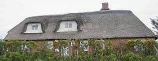
Was die Deckung mit Naturmaterialien wie Holz und Reet betrifft, kann auch nicht mehr davon ausgegangen werden, daß alle sogenannten Experten, Spezialisten oder gar Dachdeckermeister auch mit allertraditionellster Reetdachdeckerei seit Adam und Eva ausreichend verwertbare Ahnung von den historischen Einsatzbedingungen haben - oder haben wollen oder haben dürfen oder sich trauen zu haben, die eine dauerhafte Deckung garantierten.
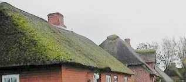
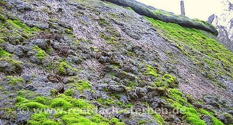
Die besonders feuchtespeicherfähigen Materialien am historischen Dach wie Holzschindeln, Stroh und Reet (Schilf
- das "Gemeine Teichschilfrohr") - man denke nur an deren betondachsteingemäße Bemoosung und Begrünung,
deutlichste Anzeichen für überhöhte und ständige Baustoffdurchfeuchtung - wurden zur Zeit ihres
Ersteinbaus vor der 2. H. 19. Jh, als feuerpolizeiliche Zwangsmaßnahmen überall den Kaminbau förderten,
in simpelster Weise vor Feuchteschäden geschützt: Mit dem
 .
.
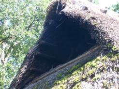
.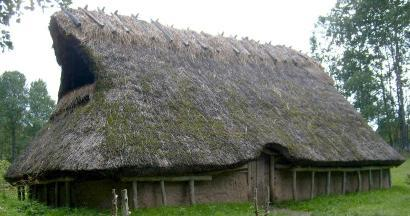
Rauchdachsystem. Will sagen: Der offene Herd gab seine Rauchgase - wie auch das offene Lagerfeuer im Haus
gab seine Rauchgase - wie auch das offene Lagerfeuer im Haus 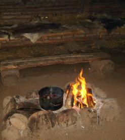
sommers wie winters in das sog. durchlüftete Rauchdach ab. Dort trocknete die heiße Luft die bei jedem Regen aufgefeuchtete / durchfeuchtete / durchnäßte Reetdachdeckung / Strohdeckung und gönnte den lieben Holzschädlinge / Schadinsekten / Schimmelpilze so dauerhaft Husten, Schnupfen, Heiserkeit, daß die sich lieber trollten. Und natürlich auch in den Dachstübchen und unter dem Vordach.
und unter dem Vordach. 
Und heute? Das ehemalige Rauchdach ist für Wohn- und Abstellzwecke ausgebaut (Ausnahme: Freilichtmuseum, dort aber kein ausreichender Heizbetrieb in Dauerfunktion), zur dauerfeuchten Regenhaut hin und in die Holzausbauteile der Geschosse wird keine trocknende Wärme mehr abgegeben. Eher bringt noch jede Türöffnung in den nicht abgeschotteten Speicher dank dichter Fenster extra feuchtschwüle Heizluft, die dann allerbestens zusätzlich in die unterkühlte Dachkonstruktion abdunstet bzw. einkondensiert. Wie es dort muffelt? Von waschküchenmäßig über Obdachlosenbehausung bis Schimmelzuchtkeller und Fußballersockenlager.
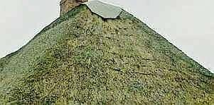
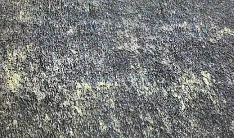
Ergebnis energiesparender DIN-Bauweisen: Feuchte ohne Ende, Materialauffrostung, Insekten-, Pilz- und Schwammbefall, bis die Bewohner sich totgehustet haben.
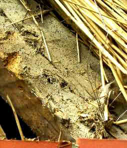
So siehts unter nahezu jedem "modern-dauerfeuchten" Reetdach über bewohnten Geschoßen nach einiger Zeit "vorzeitiger Alterung" mit bauphysikalischen Problemen aus - Holzwurmbefall (Anobium punctatum - Gemeiner Nagekäfer, Xestobium rufovillosum - großer Holzwurm, Lyctus bruneus - Splintholzkäfer, Hylotrupes bajulus - Hausbock usw.) pur, vor allem auf der deckungszugewandten Seite. Und die Schwellen sind oft schon im 19. durch Hausschwamm weggemodert worden. Schlechte Ware (zellulasehaltiges oder pilzbefallenes Reet), Alien-Schleim, Algen, Moos und Pilze in geheimnisvoller Symbiose (Moos liefert dem Pilz lebenbswichtige Feuchte und bekommt dafür die beim Zelluloseabbau entstehenden Zucker als Nahrungsmittel), ungünstiger Standort, fehlende Chemie-Keule (Fungizid, Algizid), Dachgrippevirus, mangelhafte Verarbeitung, Probleme beim Transport der Reet-Bunden, auch Docken oder Schoofe genannt? Geniale Handwerksmeister empfehlen bei der allfälligen "Sanierung" dann innenseitige Sparrenaufdoppelung, Vollsparrendämmung mit bestens absaufenden Schäumen, Gespinsten und Fasern - nicht ohne die nässegarantierende Dampfbremskondensationsfangfolie gem. "Deckregeln des Dachdeckerhandwerks", Norm, Planer-, Dachdeckermeister- und Bauherrenwahn zu vergessen. dpa berichtet am 28.2.07: "In kurzer Zeit verfault - Rätselhafter Pilz befällt Reetdaächer" und beschreibt eine "rätselhafte Pilzerkrankung, die "schmucke Reetdächer" bedroht und gegen die es kein "nachweisbar wirksames Gegenmittel gibt", "ein feuchtes, weißliches Gebilde mit starkem Pilzgeruch" verwandelt die "betroffenen Bereiche zu Matsch". Schnellstens verrotten dann die infizierten Reetdächer, verdächtigt wird ein "Zellulose fressender" Industrie-Pilz, der teuer-thermische Auflösung pflanzlicher Zellstrukturen ersetzen soll. Erinnert das nicht irgendwie an die AIDS-Debatte, in der es doch nur darum ging, die multi- und homosexuell-drogensüchtigen sowie auch die pharmazeutisch-brutalen Marketing-Praktiken in Schutz zu nehmen und die Tatsache zu unterdrücken, daß das afrikanische "AIDS" (Affenfresser- und bumserdebatte!) nur eine allzu logische Folge des westlich verursachten Hungers und der Armut ist? AIDS selbst ist dabei ja letztlich nur das Symptom einer meist tödlich verlaufenden Hepatitis-Gelbsucht, wie seriöse Forschung schon lange herausgefunden hat. Doch das ist ein anderes Thema, ich weiß schon.
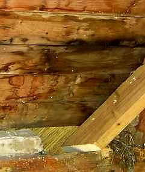
Altdeutsches Meisterhandwerk, wo bist Du geblieben? Alles nur noch Normen-Glauben ohne den dafür notwendigen
Anstand, und kein Wissen, dem Kunden das Dach von oben bis unten mit Feuchtefängern wie Dämmstoff und Folie
zugekleistert bis die Nässe über und unter der Foliendichtebene tropft? Ist da auch nur die Haupt- und
Berufsschule mit flugs abgewähltem Religionsunterricht dran schuld? Das ist bestimmt nicht nach alter Väter
Sitte! Dafür aber jedes Jahr das Moos teuer abgerecht, die wurmstichigen Balken feste ausgewechselt, die
Schimmelpilzschwammerlhütte total saniert. Na ja, der Bauherr hats ja dicke. Und Moos ist eben ein super Synonym
für dicke Kohle, oder wat? Unter dem Moos und den Algen auf der Dachfläche, die die Zellulose im dauernassen
Stroh und Schilfrohr nicht auffressen, leben aber die anderen Zellulosefresser wie Insekten, Schimmel und Pilze
vortrefflich! So kommt es mehr und mehr zum inzwischen allseits beklagten Reetsterben / Reetdachsterben /
Reetdachproblem.
Greift dann der ahnungslose Reeddachbesitzer zur Selbsthilfe und entmoost sein Dach mit den üblichen Grobmethoden,
verwüstet er sein Dach noch weiter, verbreitet den Myzelbefall im Halm unter dem Algen- und Moosteppich und
zerstört die Halmenden immer weiter, sodaß sie noch bessere Angriffspunkte für Neubefall bilden.
Interessant ist auch, daß der Befall von außen oft nicht richtig wahrgenommen wedren kann und sich
zunächst vorzugsweise in der unter der Oberflächenzone gelegenen Reetschicht ausbreitet. Bis dort alles
vermodert ist.
So ist inzwischen in sog. eingeweihten Fachkreisen und bei den allseits betroffenen Bauherren weit und breit bekannt
geworden, daß selbst ein- bis zweijährige Neudeckungen mit Reet / Stroh schon vehement mit der meist faulig
stinkenden Pilzepidemie befallen sein kann und quasi unbemerkt vermodern, verfaulen und verrotten - eine prima
Kompostierungsmethode also.
Ist nun - wie es der Physiker und Reetschadensbetroffenr Ulrich Schäfer vermutet, eine heimtückische neue
Pilzart, die Zellulose bis zu 300 mal schneller als "traditionelle Pilze" zerlegen kann, in industriellen
Forschungslabors gezüchtet für die Gewinnung von Biomasse, Zucker und andere Nahrungsgrundstoffe aus
Zellulose, für die Reet-Katastrophe - Verfaulung und Verrottung - verantwortlich? Wenn ja, bestimmt nicht alleine.
Pilze brauchen eben bestimmte Lebenbedingungen. Und die heißen neben dem Substrat (die schmackhafte
Nährstoffgrundlage) vor allem Temperatur und Feuchte. In den modernen Reetdächern, vielleicht auch noch
besonders romantisch garniert mit allzunahem schattenspendenden und trocknungsblockierendem Baumbestand - kommt das
notwendige Schadenspotential in mykologischer und bauphysikalischer Sicht ungebremst zusammen, der Befall durch
ubiquent / überall existente Pilzsporen ist folglich durch Baufehler vorprogrammiert. Das Reet fault. Wer
dafür verantwortlich ist? Raten Sie doch selbst.
Zur Anregung Ihres Grübelns: Ein Reet-Rührstück (Vorsicht: Satire!)
Ja, so manch braver Reetdachdeckermeister hat es schon schwer, so schwer. Mit dem Kunden aber erst mal nicht. Der will
aus tiefstem Inneren des Herzens, des Bauches und der Seele eben seine persönliche Glückseligkeit partout
unter einem teuren und zugegebenermaßen superschönen heidschnuckeligen Reetdach nach altbewährtem
Herkommen verwirklichen. Das kann doch jeder nachvollziehen, der noch etwas Menschen- und nicht nur Stockfischblut in
den Adern brausen und nicht nur herumdümpeln hat. Sein Erlöser heißt Reedachdecker Johann Johannson,
Fritjof Fritjofsson, Paul Paulsson, Peder Pedersen, Mads Madsen, Hein Blöd oder so. Ein wirklich toller Hecht und
Altmeister seines Faches, seine wasserblau verschmitzten Äuglein strahlen Güte, Wissen, Herzlichkeit und
Rundumvertrauen aus. Sein schlohweiß verstrubbeltes Haupthaar gibt ihm die notwendige Würde. Ja, das alles
überzeugt jeden, vor allem auch die kritische Frau, die doch sonst an den Wahnideen ihres Ehgespons immer was
auszusetzen findet. Der Reetexperte ist der Mann der Wahl, er bekommt alles, was er will, fette und flüssige
Brotzeit bei seinem verantwortungsreichen und mühseligen Deckgeschäft inklusive.
Und sein Reetlieferant? Der hat allerlei Sortierungen auf Lager, leider und sehr vielleicht auch mal minderwertigere
und feuchtere Provenienzien, die lieber nicht auf ein Qualitätsdach drauf sollten.
Wenn nun der Preis allzusehr stimmt, hat der kluge Reetverschieber den geizgeilen Handwerksmann so richtig in der
Tasche. Der Lastzug - gerne auch aus dem Osten - fährt das Reetbüschelallerlei mit arg dünnen oder auch
arg dicken Halmstängeln bunt untermischt - günstigst auf den Hof oder gleich auf die Baustelle. Jetzt kommt,
was kommen muß. Während ein grobes Qualitätsreetbüschel aus vaterländischem Abbau (gibt's
heute dank Ökobiotopschutz fast nur als widerrechtlich einzeln handgepflückte Ikebanabeilage, nach dem
Ostereiersuchen ist das einheimische Reet jedenfalls meist schon ausverkauft) sich bestens elastisch bis zum
Gehtnichtmehr übers Meisterknie biegen ließ, gibt es eben auch andere, feinere Provenienzen. Die kommen dann
vorzugsweise aus fernen Ländern daher, wie die Gewürze auf der kamelbetrampelten Seidenstraße.
Hauptsache billigst und allergrößte Gewinne - bestimmt nicht unter 1000 Prozent - versprechend. Und trotzdem
noch billiger als einheimische Ware. Die Kniebeugprobe besteht sowas nur bedingt bis gar nicht. Das giersche Kraut
schoß unter südlicher Sonne und in schad- und düngestoffbefrachteter gelber Klärkloake vielleicht
dermaßen in die Höhe, daß an einen qualitätsdeutsch mühsam und unter allerlei nordeutsch-germanischen
Entbehrungen heranwachsenden groben Biegestengel gar nicht mehr zu denken ist. Das Gebüschel wird von zarten
Kinderhänden und allerunterstem Sklavenprekariat nahezu umsonst geerntet und über weitverzweigte Handelswege
immer noch gewinnabwerfend zu (angeblich) deutschen Weiterverkäufern frisch auf den Tisch geliefert.
Na ja, das braucht schon seine Zeit. Und die können allerlei Schädlinge von mongolischen Krabbelläusen
über asiatische Spezialistenpilze bis zu was weiß ich für welchen Hühnergrippeviren bestens
für sich nutzen. Die feuchten Lagerschuppen, Tankerbunker, offen beregnete Monsunhalden oder auch
Überlagerung in kondensatgeplagten einheimischen Lagern tun ihr Übriges, um dafür beste Voraussetzungen
anzudienen.
Zweite Wahl wäre zu viel zu optimistisch für das, was da dahergekarrt und geschifft wird. Doch es muß
aufs Dach, es muß, es muß. Wenn es nicht nur brüchig ist, sondern auch weit über 25 Prozent
Materialfeuchte hat und vielleicht schon arg schimmelig muffelt? Wenn die Viecher drauf und drinnen krabbeln? Egal,
egal - wat mutt, dat mutt. Und wenn nicht? Dann muß der Lieferant gewechselt werden und der Bauherr warten. Und
die Fristen? Oh je!
So wird aufs Dach gebunden (ja, mit Tauen, anno dunnemals) oder genäht (mit Sisalschnur oder Hanfschnur)- manch
braver Handwerksmann tut gerne supergebildet und erzählt davon mit Inbrunst - greift dann aber manchmal
billigerweise zum Akkubohrer und schraubt die Niroschrauben mit Drahtanhang in die Latten - soweit er die Latte
überhaupt trifft. Dann legt er seine Reetbüschel auf, darüber die lange Drahtstange, und daran
rödelt er seinen Drahtanhang fest. So zurrt er je nach Tagesform und Muskelkraft die Büschel fest. Wenn es
weniger fest ist, braucht er weniger Büschel und das Zeugs hängt allzu lose. Wenn er seinen guten Tag hat,
drillt er das Reet superdicht, dann hält es die Feuchte besser und wird umso schneller Opfer der Verrottung. Das
ganze kann durch die Verwendung der Eisendrähte bestens beschleunigt werden. Sie ziehen ja - weil länger kalt
- in besonderer Weise den Tau und die Regenfeuchte an. Schlauheit des Materials, Intelligenz der Konstruktion,
Blödsinn des Pfuschs. Wofür hat man denn seine Regeln?
Und um das ganze noch zu toppen, sind so einige Reetdecker offenbar zu tropfig, um das Fenstertropfbrett ausreichend zu
bemessen. Dimensionieren sagt der lateinische Franzos. Es sieht so zwar hübsch schmal aus, läßt aber
dafür das Gaubentropfwasser sturzbachartig sowohl die ungeschützte Auftropffläche - immer unterhalb des
Bretts - schau nur mal bei Regen aus dem Fenster, guter Reetdachbewohner - zerdeppern und den Rest bis in tiefste Tiefe
extra auffeuchen. Folglich fängt unter den blöden Gaubenfenstern (gab es früher eher auch nicht, weil
die Dächer ja nicht ausgebaut waren! - abgesehen von nur der stetigen Lüftung und Trocknung dienenden,
korrekt bemessenen Fledermausgauben in Scheunendächern) die Reetverwesung gerne am ehesten an. Ausnahmen
bestätigen die Regel. Und auch wer stur glaubt, viel hilft viel, ist beim Reetdach auf dem Holzweg.
Überdicken bringen in Richtung Dachfirst die für den ausreichend geschwinden Wasserabfluß notwendige
Dachneigung - also die konstruktiv gebotene Mindestdachneigung von 45 Grad - locker runter in Richtung 30 und sogar
noch weniger. Ebenso werden an den schmuck geschwungenen Gauben / Dachgauben und den Kehlen / Dachkehlen ebenfalls
Unterschreitungen der Mindestneigung hingenommen / toleriert, die jedem handwerklichen Know-how nicht nur widersprechen,
sondern m.E. den doofen Kunden brutal verhöhnen. Das Unterschreiten der Mindestneigung bedeutet immer
längeres Verharren des Regenwassers am Dach und deswegen eine insgesamt nässere Dachhaut. Das programmiert
alle damit zusammenhängenden Schäden vor und ist Kundenbetrug hoch drei. Wer schön sein will, muß
leiden. Echtes Handwerk ist eine große Kunst und setzt viel Verstand und Erfahrung voraus. Das gilt auch am
Reetdach bzw. Schilfdach / Rohrdach.
So kommt eben manchmal, was eben kommen muß: Reetpfusch fein, nicht grob, mal fest, mal lose, gern auch auf
Vollsparrendämmung, der seinen Keim der Schnell-Verwesungschon in sich birgt und fast kein Jahr mehr hält,
was der Traum vom Reet einst versprach.
Doch damit manchmal nicht genug. Die überhohe Bereicherung der Reetbüschel mit dem bunten Allerlei sucht
seine Opfer. Nicht mehr ganz hasenreine Reetdachdecker mit nicht mehr ganz unverwüstlicher Gesundheit und
angegriffenem Immunsystem bekommen durchaus ihr Fett ab und zeigen köperliche Abwehrreaktionen gegen das
Pfuschreet. Allergieschocks vom tränenden Auge über unerschöpflich erschöpfendem Gehüstel
(warum hast Du nicht Deinem Lieferanten was gehustet, als noch rechte Zeit dafür war?) bis zu
Ganzkörperreaktionen wie pustelübersäter Haut, aufbrechenden Furunkeln allerorten und partiellen
Lähmungserscheinunen diversester Körper- und Organfunktionen folgen dann.
Doch auch damit noch lange nicht genug. So rottet ein verpfuschtes Reetdach noch in der Gewährleistungszeit dahin,
der Kunde erkämpft Regreß und dann wird die Bude auch mal notgedrungen dichtgemacht (und unter dem Namen der
Frau oder als GmbH schnellstmöglich wieder eröffnet?).
Nur dumm, daß der Rubel rollen und rollen muß. Und da heißt es ran an den Auftrag mit Dumpingpreisen.
Leider gelingt das folgende Aufspecken mit Nachträgen und Zusatzverkäufen von Isolierstoffen und
Folienschichten nicht immer wie gewünscht, auch da dreht sich manche Preisspirale viel zu schnell abwärts.
Die Lösung (?): Schneller pfuschen. Ja, das ist genau das, was man einen Teufelskreis nennt. Herrgott hilf!
Was macht nun der Bauherr in diesem üblen Spiel? Erst mal kennt er das Problem nicht in allen Facetten. Wir dürfen
also nicht annehmen, daß der Reetdach-Bauherr und seine herumklügelnden Vertreter und Planer - egal ob privat oder staatlich,
aus Kirchbauamt oder Freilichtmuseumsleitung - in den materialtechnischen, wirtschaftlich-kaufmännischen, konstruktiven und bauphysikalischen
Komplexen in hinreichendem und vor allem schadensvorbeugendem Umfang durchblickt. Wie denn auch, bei all den bekannten Interessens- und Motivationslagen?
Wer berät ihn korrekt, ohne eigene Interessen an diesem oder jenem, nur der ewigen Wahrheit gemäß? Ja, da heißt es
lange suchen nach den wenigen Nadeln im allzudicken Reethaufen. Doch das Dach ist offen, da bleibt nicht allzulange Zeit
für pfuschvermeidende und pfuschbekämpfende Strategieentwicklung. So isses halt wie immer und ewig, solang die Welt sich dreht:
Augen zu und durch! Bei mir wird's schon klappen, und außerdem guckt der Schlohschopfmeister doch so treuherzig ...
Siehe oben. Dabei weiß jeder - Qualität hat seinen Preis.
Wie könnten nun die Vorbeugemaßnahmen aussehen? Erstens Trockenheit, zweitens Trockenheit und drittens
Trockenheit. In den heute gebräuchlichen Konstruktionsvorstellungen der Baubranche (Energiesparverordnung, Dachdeckerregeln,
Gefälleunterschreitung, Vollsparrendämmung ohne ausreichende Unterlüftung, Norm hoch drei) ist das
gewiß nicht immer zu gewährleisten. Und notgedrungen vorbeugende Behandlung mit Schutz- und Konservierungsmitteln?
Das Grundsatzproblem - die übermäßige Feuchte - ist weder mit algiziden und fungiziden Flüssigkeiten noch
Kupferionenspendern beseitigt, sondern braucht mindestens Unterlüftungsergänzung. Von pharmazeutischen Produkten zur Infektionsvorbeugung und Behandlung, gegen Asthma, Allergie, nässenden und eitrigen Hautauschlag,
Atemwegserkrankung, Herzattacke und Gliederlähmung will ich hier nicht reden - fragen Sie Ihren Arzt oder Apotheker und die ihren Pharmareferenten.
Viel wichtiger als gedacht, gewußt und geplant ist auf jeden Fall der konstruktive und thermische Schutz, an dem es sonst hapert und auf den so viele
Experten rein gar nichts mehr geben. Ein stetig durchwärmtes und ausreichend belüftetes Reetdach trocknet (wie jedes Dach) schnell aus und bietet den feuchteliebenden
Schädlingen logischerweise nicht besonders angenehme Lebensbedingungen. Und sogar die moderne Bindungsart ist als
nicht unwesentlicher Überfeuchtungsfaktor zu verdächtigen, da sie wie das Nach-Stopfen von schon verrotteten
Schadensbereichen bei der Reet-Reparatur mehr Feuchterückhaltung spendieren kann, als bei der alten Bindetechnik,
wenn heutztage - aus guter Absicht, zugegebenermaßen - zu dicht und zu dick gedeckt wird. Doch gut gemeint ist nicht
immer auch gut getan. Ja, der Volksmund und die Weisheit des Sprichworts.
Wenn man Glück hat und der Verwesungs- und Kompostierungseffekt noch wesentlich über der Bindung sein Ende
findet, läßt sich das angekrankte Reet vielleicht sogar noch retten. Runterreißen, evtl. an
Schwachstellen flicken, besser unterlüften und von innen die Feuchtezufuhr möglichst unterbinden
und die Wärmezufuhr verbessern. Ansonsten Neudeckung - jetzt vielleicht mit Betondachstein oder Wellbitumenpappe?
Wenn's Geld noch langt.
Daß sich heutzutage keiner mehr nen Kopp macht, wie früher die Schilfbüschel / Reetbüschel oder Strohgarben
gebunden wurden, läßt ebenfalls einen tiefen Einblick in die material- und baustoffverdummte Handwerkspraxis zu.
Selbstverständlich - und das wissen aufmerkasme Bauforscher schon von metallischen Nagelungen und Schrauben im verrotteten Holz -
hängt sich im jahresablauf oft genug Kondenswasser / Kondensat an die metallischen Befestigungsteile, egal ob V2A-Schrauben und Bindedraht /
Runddraht / Schachtdraht 4,6 mm für im gebundenen Dach oder der 1 mm starke Nirostadraht zum schneckenförmigen Vernähen der
Rohrbunde mit den Dachlatten. Warum das so ist? Nicht, weil Metall eine höhere Wärmeleitfähigkeit als Holz oder Schilf
aufweist, weit gefehlt! Es ist die höhere Speichermasse, die sich der Erwärmung länger widersetzt, als
die Baustoffe mit geringerer Dichte. So bleiben alle Materialien mit höherer Rohdichte "automatisch" länger kalt bei Aufheizvorgängen
- dafür auch länger warm bei Abkühlung. Das kann man an der mit der Staubanlagerung und Verschmutzung einhergehenden
Kondensatanreicherung in falsch geheizten und falsch gelüfteten Räumen oft detailgenau beobachten: Beispielsweise zeichnen
sich bei der heizungsbedingten Verschmutzung von Raumschalen die Mörtelfugen heller ab als die massiven Mauersteine, bei
der Verwendung der minderwertigen Porensteine kann sich das dann umdrehen.
Folge der Metallverwendung im Reetdach: Feuchteanreicherung, wo man sie nun wirklich nicht brauchen kann. Es war also
nicht Armut, die unsere Altvorderen zu Naturmaterialien (Hanfschnur u.ä.) für die Dachverarbeitung greifen ließ,
sondern jahrhundertelanges erfahrungswissen, das dann die Industrialisierung abschaffte. Immer zum Schaden der Qualität, oder?
Noch was? Ja freilich! Materialanforderungen für Reet (usw.) in der Planung qualitätsmäßig
festschreiben ohne Ende. Das setzt freilich Materialkenntnis und Baustoffverständnis voraus. Halmdurchmesser,
Feuchtegehalt, Provenienz, Bindungsdichte und -art. Und prüfen, nachgucken, kontrollieren, beschnuppern,
betesten was das Zeugs hält. Provenienzkontrolle, Lagerschupppeninspektion, Lieferscheinverdächtigung in
unabhängiger Hand! Auf Deutsch: Planung und Bauleitung. Doch wer soll das leisten für'n Appel und'n Ei? Wo
doch dat Reet scho so kost! Ein Vermögen! Und warum denn sich die Mühe
machen und einen Reetdachdecker raussuchen, der dank altdeutscher Handwerksgesinnung und
Gewissenhaftigkeit erwiesenermaßen über langjährig schadensfreie Referenzobjekte und beste
Gewährleistungsreferenzen verfügt? Also: Lat et loopen, wie et loopen will! Das Leben ist eben ein Abenteuer.
Viel Glück, Erfolg und Gottes überreichen Segen! Jawollja!
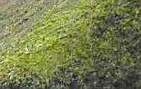
 .
. .
. .
. .
.
So gut kann man heiße Rauchgase zur Konservierung der Gaumenfreuden zweitverwursten: .
.
Weiter mit dem Fallbeispiel Reet:
 ..
.. .
. .
.
Hier gedeihen allerlei Insekten: Staubläuse (Psocoptera, Lepinotus patruelis, Lepinotus reticulatus, Trogium
pulsatorium), freilebende Raubmilben (Gamasina, Andreolaelaps casalis), Hornmilben und Moosmilben (Oribatei, Euzetes
globulus), Kurzdeckenkäfer (Staphylinidae, Hypocyphus) und allerlei sonstige Käfer und Spinnen in reicher
Artenvielfalt. Herrlich, welch feines Biotop ein vollbiologisches Naturdach bietet - doch manche Reetbewohner graut es
davor. Die gemeine Staublaus und ihre Freunde bevorzugen feuchte Umgebung - ein nassvermoostes Reetdach bietet hier
ideale Bedingungen, auch schon am Anfang - bevor es moost.
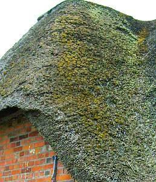
.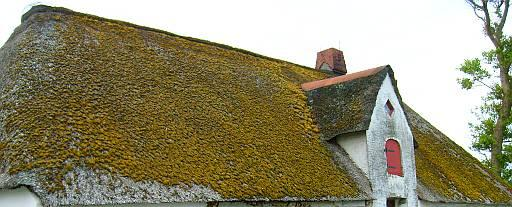
.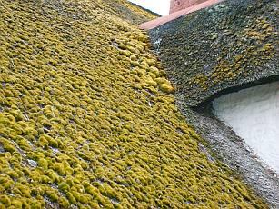
.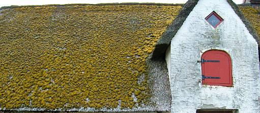
.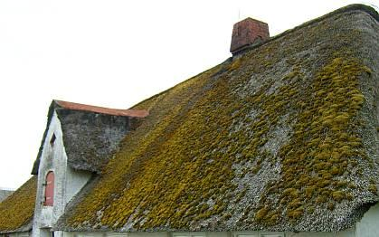
.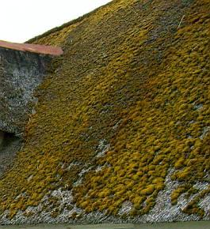
.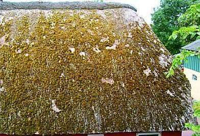
.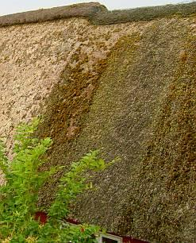
.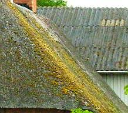
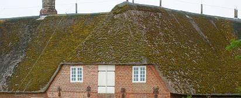
. .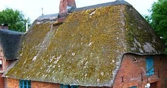
.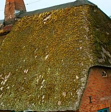
.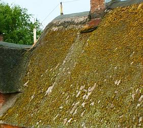
.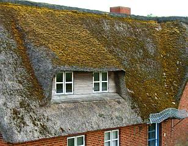
.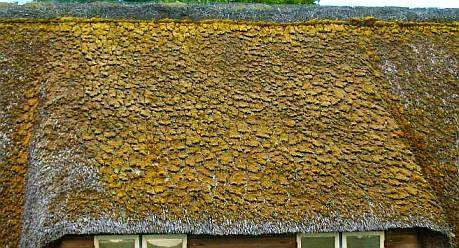
.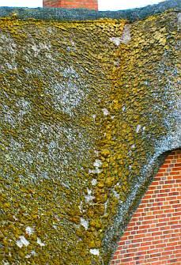
.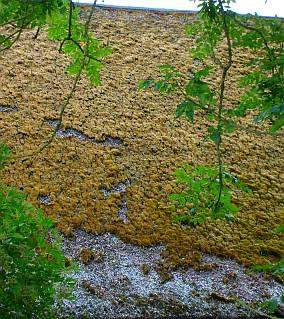
.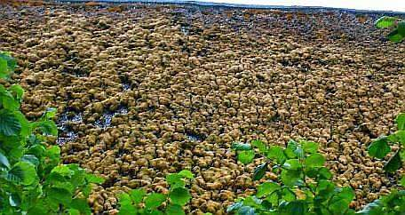
.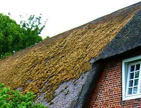
.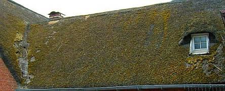
. .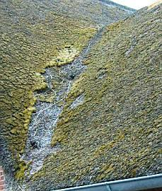
.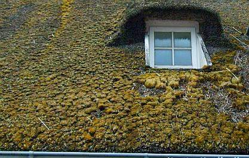
.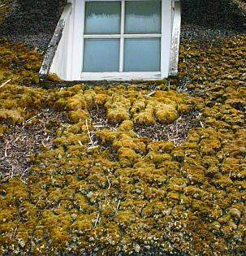
.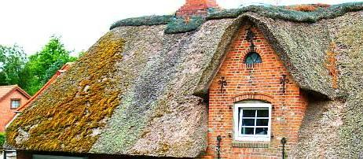
.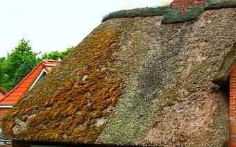
.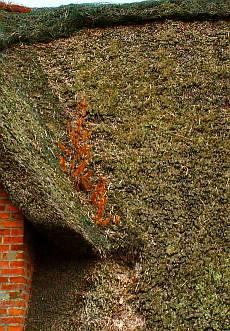
.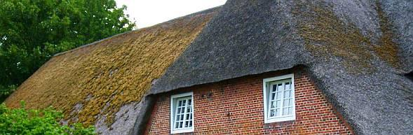
.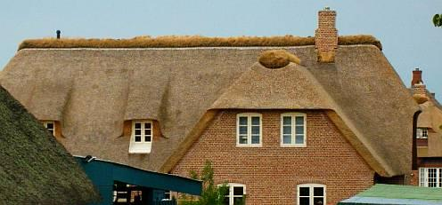
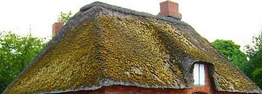
.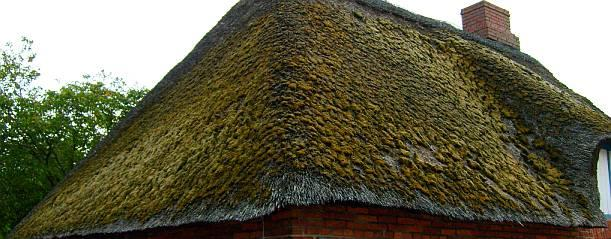
. .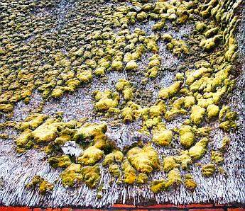
.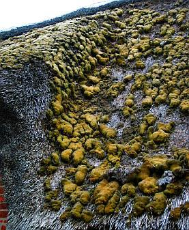
.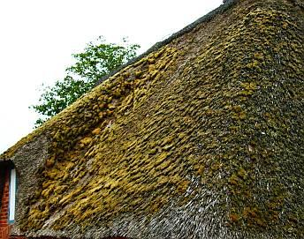
.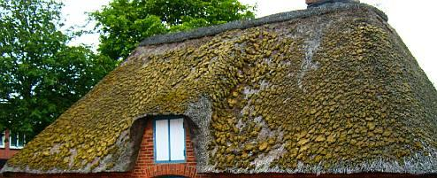
.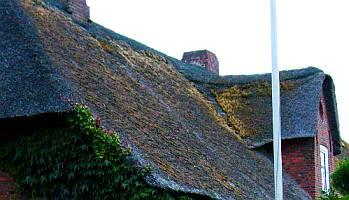
.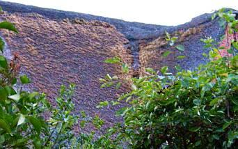
.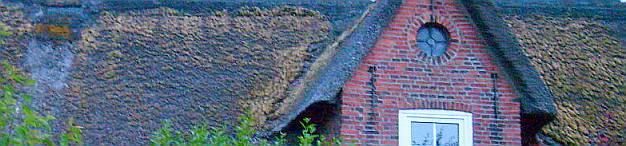
.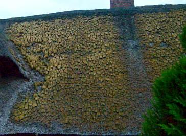
.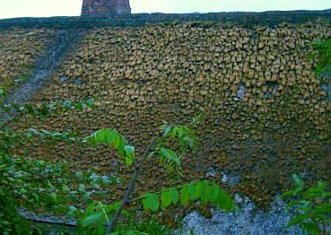
.. ..

Auch eine Alternative: Über den Wohnungen massiv, speicherfähig, temperaturstabil und feuchtesporptionsfähig das ausgebaute Dach mit ausreichender Unterlüftung dämmen, Überfeuchte im ausgebauten Dachwerk durch simple Konstruktionsweise und einfache Heiz- und Regeltechnik beherrschen. Weiß davon jeder Reetdachexperte und Dämmstofffanatiker wirklich mehr als Hein Blöd? Und weiß schon jeder Museologe, wie wärmebedürftig seine Lieblinge sind, wie man beispielsweise mit reduzierter Elektroheizkabeltechnik und elektrisch versorgten Wärmestrahlern unter Nutzung der historischen Bauteile das Objekt und seine nicht minder empfindlichen Exponate vor überhöhter Feuchte- und Temperaturkorrosion schützt? Von Kapillarkondensation schon bei Luftfeuchten über 60%? Und wie sieht es aus mit den statischen Mehrkosten bei alternativer Hartbedachung? Die weitgespannten und "dünnen" Konstruktionshölzer der Reetdächer können die Mehrlast einer Hartbedachung nämlich nicht ohne weiteres stemmen, da muß meist nachgelegt werden.
http://www.fachwerk.de/goForum.html?id=23921 - Problem Reetdach
Lübecker Nachrichten 03.02.2009 - Bad Oldesloe: Rechtsstreit um den Ruf des Reetes